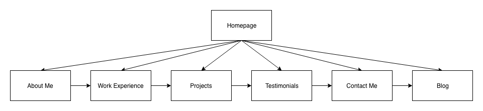
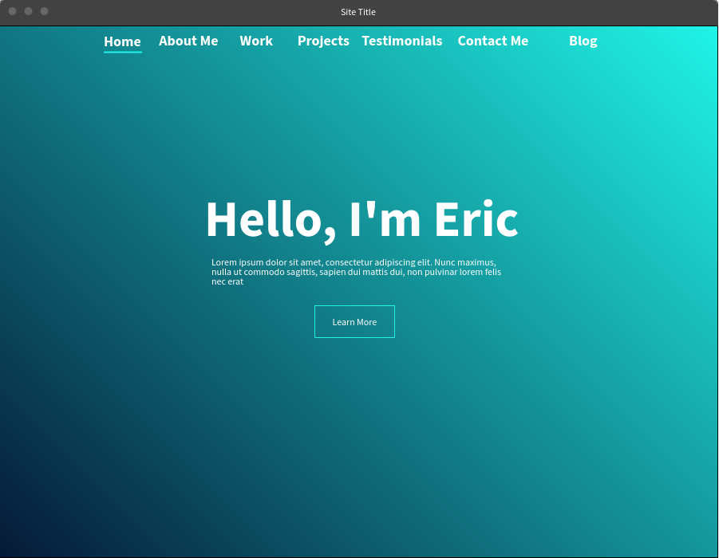
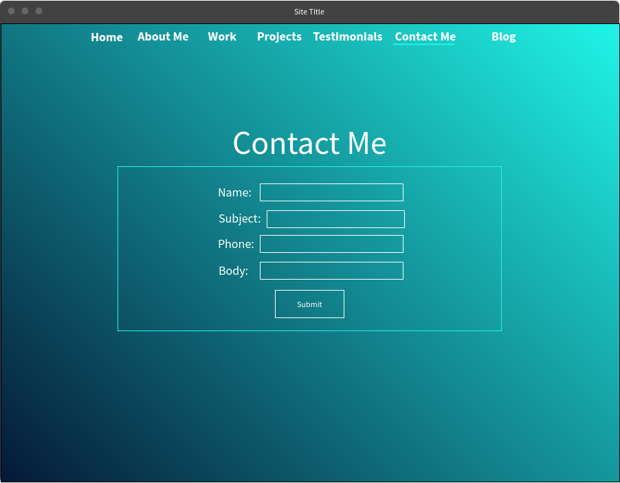

Fundamentals of Web Development
Final Project Details: Eric Groh
Final Project Milestone 2
Sitemap

This is the Sitemap of my portfolio website. The user will start
off on the homepage and then navigate to the about me page where they will
begin the journey to get to know me professionally. Each page will allow
the user to move on to the next in the order. However, what the diagram
does not show is that the user will have the option to navigate to any
page using the navigation menu.
Wirefames

homepage wireframe.

Contact page wireframe